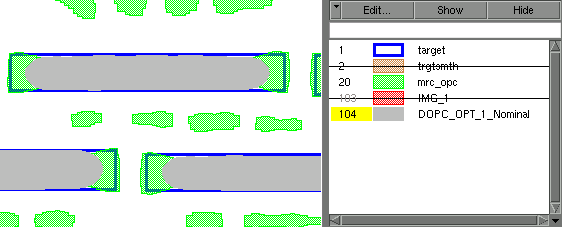

Calibre pxOPC
is designed to provide reasonable results for many situations with
no or minute customizations. To determine where the customizations
are needed, each step (job) is checked against its contract. To
best know where to tune, first you must see where the contracts
are not being met by default settings.
Prerequisites
GDS
or OASIS layout containing the run results.
SVRF
file to run Calibre pxOPC upon a layer in the file.
Calibre
pxOPC setup file, called by the SVRF file. It may be a separate
file or inside the SVRF file.
Calibre
WORKbench license.
Procedure
- After the run completes, open
the results database in a Calibre viewer. In the example, the results
are written to result.oas.
To open this file in Calibre WORKbench:
- Hide all but the final layer.
It should show post-OPC features and SRAFs. To simulate the likely
final image:
- If the layout is large, zoom
into a region.
- Select .
- Add required settings by either
extracting them from an SVRF file (), opening
an external Litho setup file, or by clicking Default in the middle of the
toolbar.
- Click PI to run print image.
- Compare the PI layer and the
target layer for any issues.
Results
Your
layout now shows both Calibre pxOPC output and a simulated print
image, as shown in Figure 1. In the figure, the Calibre pxOPC output
is on layer 20 and the simulated print image is on layer 104.
Figure 1. Default
Output Using Example Files